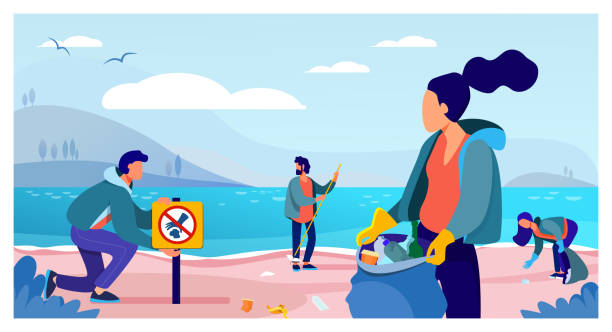
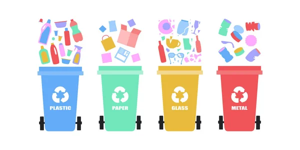
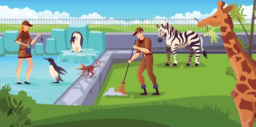
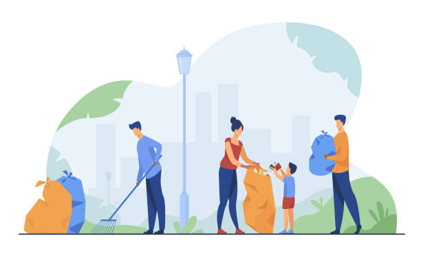
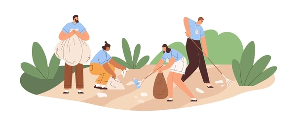

Discover the various ways you can make a difference in Cape Town. Our
volunteer programs cover education, environmental conservation, and city
beautification. Explore each opportunity and find where you can
contribute your skills and passion.
The Cape Education Empowerment Initiative is a transformative program
aimed at elevating educational opportunities for under-resourced
communities in Cape Town. By providing access to quality learning
materials, after-school tutoring, and mentorship programs, the
initiative focuses on bridging educational gaps and inspiring lifelong
learning. With a specific emphasis on STEM (Science, Technology,
Engineering, and Math) education, the program seeks to empower young
learners with the skills needed for future success in a
technology-driven world.
Public awareness campaigns are a cornerstone of this program, designed
to educate citizens about the environmental impacts of littering and the
benefits of a clean cityscape. By hosting community events, such as
neighborhood clean-up days and educational workshops, the program
promotes active participation from residents and fosters a culture of
pride in maintaining a litter-free city. The City Litter Prevention
Program not only enhances the beauty and safety of public spaces but
also strengthens community engagement, making urban environments
cleaner, healthier, and more inviting for everyone.
Pollution Prevention

In collaboration with local schools and universities, the initiative
offers workshops, practical learning sessions, and career guidance
programs that introduce students to a wide range of subjects and career
paths. An integral part of the initiative includes digital literacy
training, ensuring students are well-prepared for the evolving demands
of the modern workforce. The program also places strong emphasis on
teacher training, equipping educators with innovative teaching
techniques and resources to engage students effectively. By fostering a
supportive learning environment, the Cape Education Empowerment
Initiative is dedicated to building a stronger, more educated community.
It aims to inspire young people to pursue higher education and build
meaningful careers, ultimately contributing to Cape Town’s social and
economic development.

By fostering a supportive learning environment, the Cape Education
Empowerment Initiative is dedicated to building a stronger, more
educated community. It aims to inspire young people to pursue higher
education and build meaningful careers, ultimately contributing to Cape
Town’s social and economic development.
Penguin Preservation
The Cape Penguin Conservation Initiative is a dedicated project in Cape
Town focused on safeguarding the vulnerable African penguin species.
Over recent decades, African penguin populations along the South African
coast have sharply declined due to threats such as overfishing, oil
spills, and habitat destruction. This initiative aims to restore their
habitat and address these challenges through strategic conservation
efforts. By establishing protected breeding grounds, monitoring penguin
colonies, and conducting regular beach clean-ups, the project provides a
safe environment essential for the species' recovery.

Furthermore, the initiative collaborates with local fisheries to promote
sustainable fishing practices, ensuring a balanced ecosystem that
preserves the penguins' primary food source. A core component involves
public education campaigns, raising awareness about the importance of
marine biodiversity and inspiring local communities and visitors to
support preservation efforts. Visitors can join volunteer programs,
participate in guided tours, and attend workshops, creating an engaging
conservation experience. Through community involvement and responsible
eco-tourism, the Cape Penguin Conservation Initiative aims to not only
protect this iconic species but also foster a collective commitment to
preserving Cape Town’s unique coastal ecosystem.
City Litter Scheme

The City Litter Prevention Program focuses on keeping urban spaces clean
and litter-free through proactive measures and community involvement. To
tackle the persistent problem of litter, the program has installed
additional trash and recycling bins in high-traffic areas, along with
clear signage encouraging proper disposal. Through partnerships with
local businesses and food vendors, the program also reduces single-use
packaging by promoting reusable alternatives and offering incentives for
eco-friendly practices.

Public awareness campaigns are a cornerstone of this program, designed
to educate citizens about the environmental impacts of littering and the
benefits of a clean cityscape. By hosting community events, such as
neighborhood clean-up days and educational workshops, the program
promotes active participation from residents and fosters a culture of
pride in maintaining a litter-free city. The City Litter Prevention
Program not only enhances the beauty and safety of public spaces but
also strengthens community engagement, making urban environments
cleaner, healthier, and more inviting for everyone.